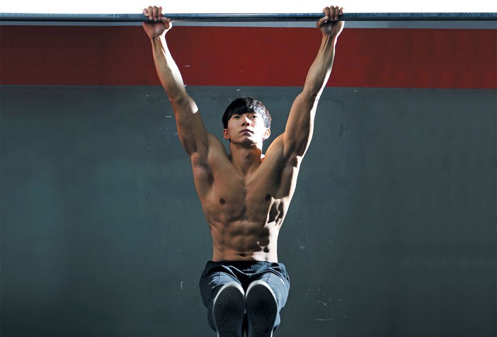

Calisthenics(American English) or callisthenics (British English) is a form of exercise consisting of a variety of movements that exercise large muscle groups (gross motor movements), such as running, standing, grasping, pushing, etc.
These exercises are often performed rhythmically and with minimal equipment, as bodyweight exercises. They are intended to increase strength, fitness, and flexibility, through movements such as pulling, pushing, bending, jumping, or swinging, using one's body weight for resistance. Calisthenics can provide the benefits of muscular and aerobic conditioning, in addition to improving psychomotor skills such as balance, agility, and coordination.